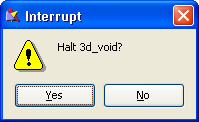
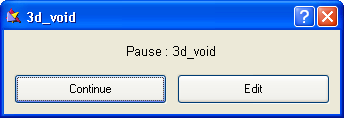

|
The Stop Menu |

  
|
|
The Stop Menu |
|
When a problem is running, it is sometimes necessary to request an abnormal termination of the solution process. This may be because the user has discovered an error in his problem setup and wishes to modify it and restart, or because the solution is satisfactory for his needs and additional computation would be unnecessary.
The Stop menu provides several ways to do this, with the most imperative controls at the top, descending to less immediate terminations:

The contents of this menu will depend on the type of problem that is being run. Below are the most common.
Stop Now!
This is a panic stop that causes processing to be interrupted as soon as possible. No attempt is made to complete processing or write output. You will be given a chance to change your mind:

If you click "No", the "Stop Now!" will be ignored.
Finish Iteration
At the conclusion of the current iteration phase, the processing will be completed as if convergence had been achieved. Final plots will be written, and FlexPDE will halt in Plot mode.
Finish Grid
Processing will continue until convergence requirements have been met for the current mesh. No additional adaptive mesh refinement will be attempted, and the problem will terminate as if final convergence had been achieved. Final plots will be written, and FlexPDE will halt in Plot mode.
Finish Stage
In a "Staged" problem (q.v.), the current stage will be completed, including any necessary mesh refinement. Final plots will be written for the current stage, but no more stages will be begun. FlexPDE will halt in Plot mode.
Pause
FlexPDE will stop processing and go into an idle state waiting for a mouse click response to the displayed dialog:

"Continue" will resume processing at the point where it was interrupted. "Edit" will terminate processing as if "Stop Now!" had been clicked. This function can be used to temporarily free computer resources for a more important task without terminating the FlexPDE run.
Dump for Restart
Selecting this checkbox will cause FlexPDE to save a TRANSFER file after another entry in the Stop menu is selected. See the example "Restart_Export.pde". Note: TRANSFER files do not save the state of HISTORY plots, so restarted problems will have fragmented Histories.
Page url: index.html?thestopmenu.html